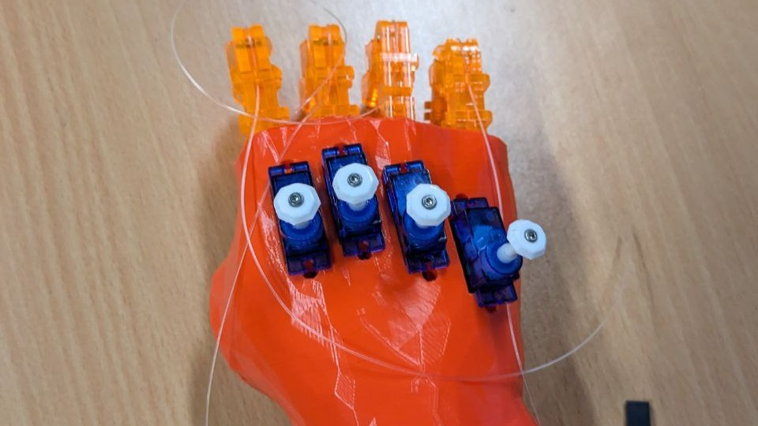
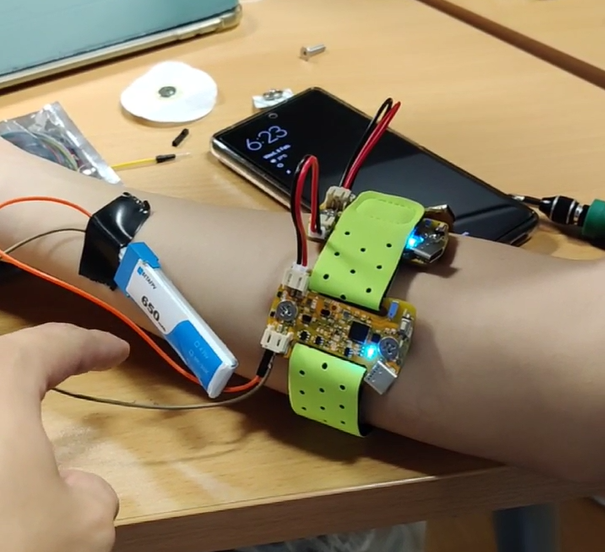

Bio-RoBot (BRB) Project
Tags: Prostatic Hand, 3D Modelling, Arduino Programming


The aim of this project is to create a soft robotics based prostetic
hand for sensitive user control. For this project, I worked to design
and create the circuitry for a prototype, and also helped design, 3d
model and fabricate the prostetic arm.